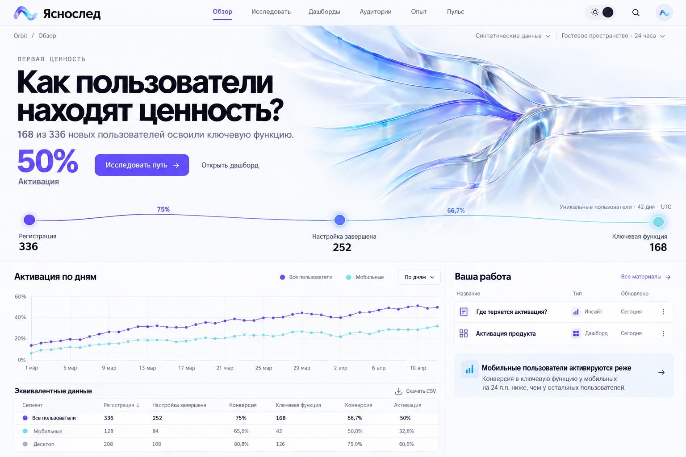
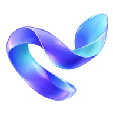
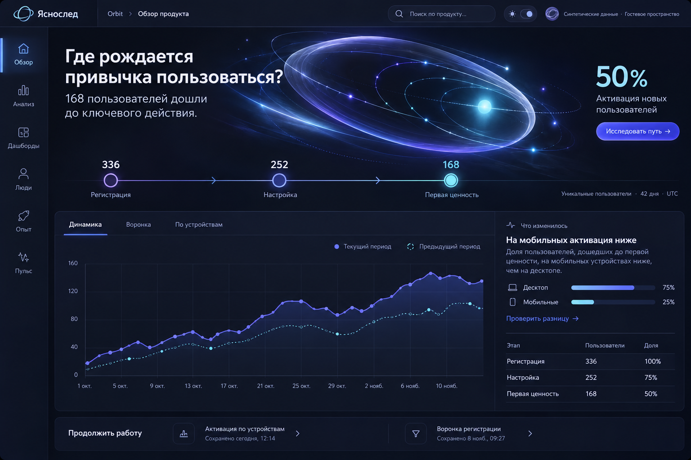
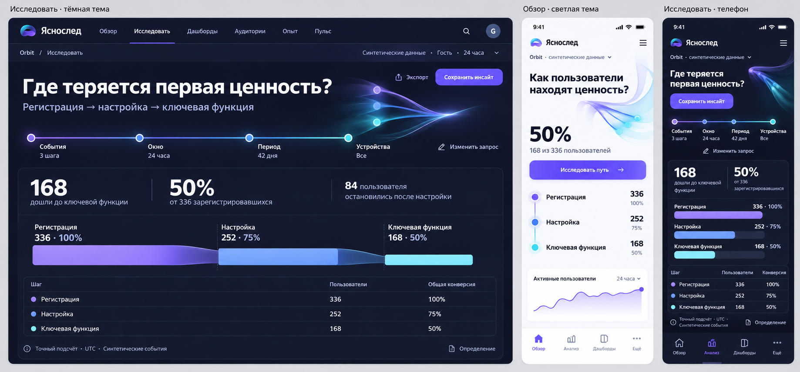
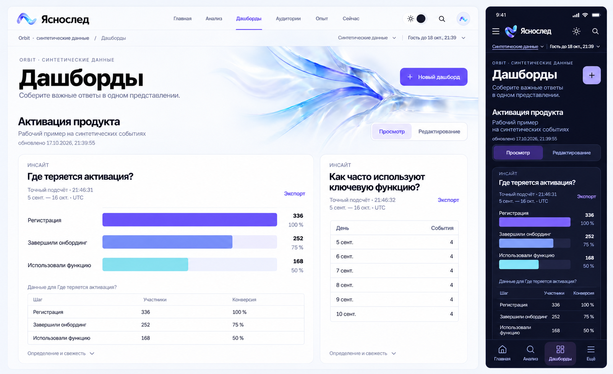
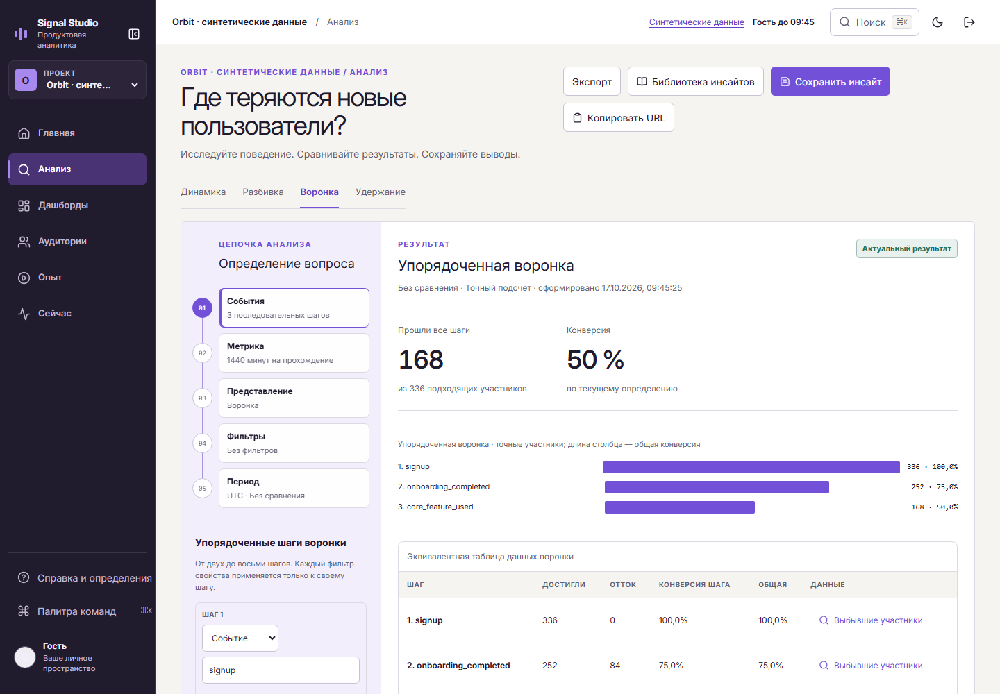
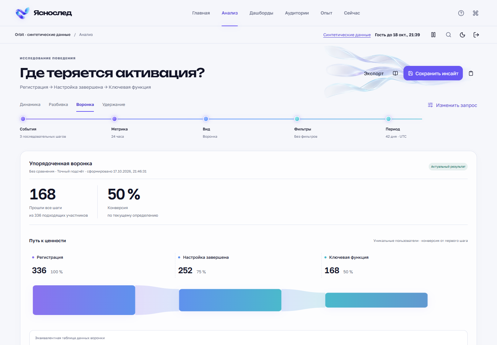

Макет imagegen · A · Выбрано
Оптический след
Жемчужный холст, выразительная кириллица, тонкие линии и прозрачная оптическая форма. Сильная визуальная идентичность оставляет место настоящим данным.

ЯсноследОптический след · дизайн и реализация
Единый аналитический инструмент: от первого вопроса до сохранённого инсайта. Новый знак, широкая рабочая поверхность, две темы и движение, которое связывает действия с результатом.
01 · От идеи к системе
Два разных направления созданы через imagegen. Выбрано A: оптические пути собираются в один ясный след. Этот образ объединяет знак, главную, пустые состояния и анимацию интерфейса.

Жемчужный холст, выразительная кириллица, тонкие линии и прозрачная оптическая форма. Сильная визуальная идентичность оставляет место настоящим данным.

Глубокая тёмная среда, орбитальный ритм, компактная вертикальная навигация. Выразительно, но менее естественно для спокойной повседневной аналитики.
Форма объясняет продукт: множество событий превращается в один понятный ответ. Светлая и тёмная темы строятся на одной системе, а горизонтальная навигация освобождает пространство исследования.
Оригинальный знак, оптическая иллюстрация с прозрачностью, Unbounded и Golos Text, непрерывный холст, связанная цепочка запроса и согласованные переходы. Графики и таблицы остаются рабочими элементами приложения.

Макет imagegen. Тёмный «Анализ» и мобильные экраны выбранной системы. Числа, подписи и траектории на макетах иллюстративны.
Открыть полный макет ↗
Макет imagegen · Дашборды. Согласованный референс светлого desktop и тёмного mobile. Использует выбранные A и реальные кадры дашбордов как визуальные ориентиры. Это созданное изображение, а не снимок продукта; рабочие экраны доступны ниже.
Открыть полный макет ↗02 · Работающий продукт
Ниже — снимки реального интерфейса. Выберите раздел, тему и устройство. Каждый кадр открывается полностью.
Синтетические события обозначены явно. Рабочая воронка рассчитана приложением: 336 регистраций → 252 завершения настройки → 168 активаций, конверсия 50 %. Стеклянный след — бренд-иллюстрация; он не содержит аналитических значений и не подменяет график.
Главная. Вопрос, фактический ответ и путь к ценности на одной поверхности.
Полный снимок ↗03 · Живое взаимодействие
Запись работающего приложения показывает реальные переходы и взаимодействия. Это видео интерфейса, а не сгенерированный ролик.
В интерфейсе нет вымышленных событий или симуляции свежести данных. Анимация останавливается по настройке пользователя.
Открыть видео отдельно ↗04 · Прямое сравнение
Слева — опубликованный M19. Справа — M20. В обоих случаях показан рабочий интерфейс на одном синтетическом наборе данных.


На отдельном листе: компьютер и телефон до / после, выбранный макет рядом с реализацией, светлая и тёмная среды. Изображения раскрываются в исходном размере.
Открыть сравнение ↗05 · Контекст
Два направления, выбранный адаптивный макет, оригинальная оптическая иллюстрация и знак созданы встроенным imagegen по записанным промптам. Runtime-иллюстрация и знак имеют настоящую прозрачность. Шрифты Golos Text и Unbounded поставляются локально по OFL. Новых внешних зависимостей у галереи нет.
Основные production-снимки и дополнительные локальные снимки отмечены в подписях. Результаты тестирования и ограничения выпуска фиксируются в отчёте M20.